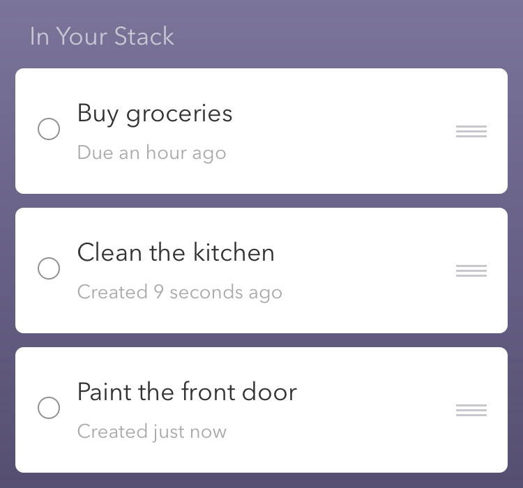
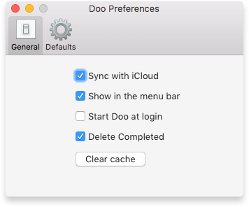
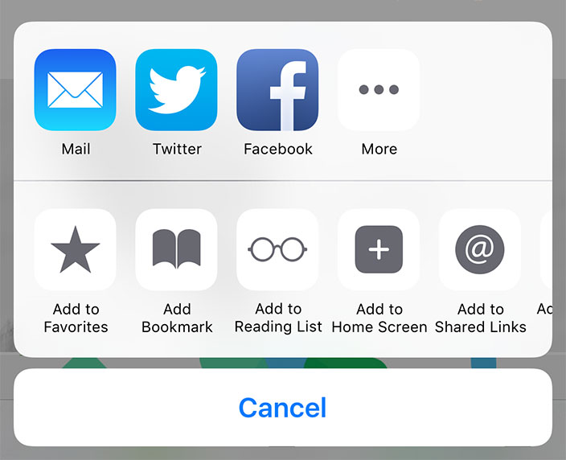
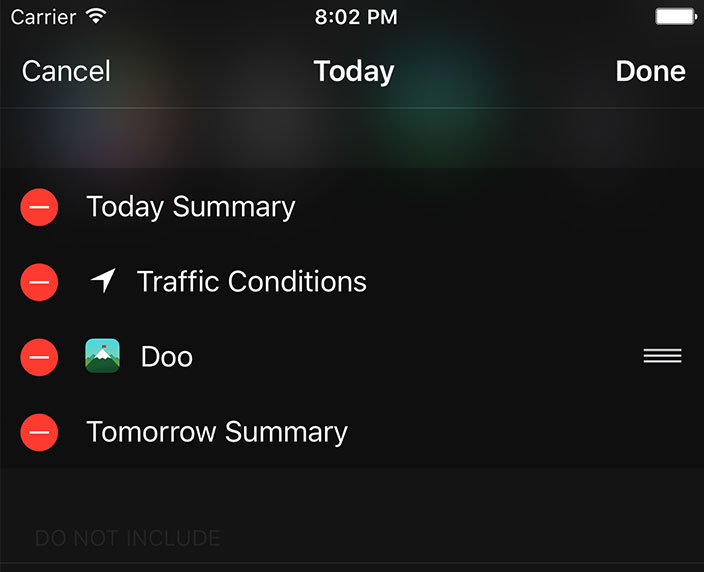

Pick a topic below to see a list of common questions and answers.
How do I create a new reminder?
Tap or click the button at the bottom of the main card screen. You can also create reminders on iOS using the 3D touch shortcut, the share extension, or Notification Center widget.
How do I edit a reminder?
Tap or click the icon on reminder cards to edit. You can also edit reminders by from the schedule view. Tap or click the icon on the main card screen. Tap or click the desired reminder to edit.
How do I delete a reminder?
Open the schedule view from the icon on the main card screen. Locate the reminder to delete and tap or click the icon. Tap or click the button.
How do I create a reminder with an alert before the due date?
On the add screen, make sure you have the option enabled.
On iOS tap the date. On the date screen tap the button beneath the date picker. Select the amount of time you’d like to be reminded beforehand.
On Mac click the button to the right of the date. Select the amount of time you’d like to be reminded beforehand.
Reminders with early alerts show up in your stack before the due date.
How do I create a reminder without a notification?
On the add screen, make sure you have the option enabled.
On iOS tap the date. Tap the toggle to the off position.
On Mac click the button to the right of the date. Click the checkbox to the off position.
How do I create custom repeat schedules?
On the add screen, make sure you have the option enabled.
On iOS tap the active repeat duration. Select the option. To repeat on days of the week, make sure to use the option.
On Mac click the button to the right of the active repeat duration.
How do I complete a reminder?
To complete the top card on iOS, swipe it up. You can also tap the button or use the schedule view. Tap the icon on the main card screen. Locate the reminder to complete and tap the icon. Tap the button.
To complete the top card on Mac, click the button. You can also complete reminders from the schedule view. Click the icon on the main card screen. Locate the reminder to complete and click the icon. Click the button.
How do I snooze a reminder?
To snooze the top card on iOS, swipe the card down. You can also tap the button. To bypass your default snooze setting, force press or long press the snooze button. Select between preset options or choose a specific date.
To snooze the top card on Mac, click the button. To bypass your default snooze setting, right click the snooze button. Select between preset options or choose a specific date.
How do I skip a reminder in my stack?
To skip the top card on iOS, swipe the card left or right. If VoiceOver is enabled, tap the button.
To skip the top card on Mac, click the button. You can also two-finger swipe left or right using your trackpad, or scroll left or right using your mouse.
How do I sort or prioritize the reminders in my stack?
Open the schedule view from the icon on the main card screen. On iOS, tap the button at the top right. Sort reminders in the “In Your Stack” section using the drag handles. On Mac, the drag handles appear when you hover over the reminder. Items appear in your stack from top to bottom.
How do I enable or disable iCloud syncing?
Tap or click the icon on the main card screen. On iOS, tap the iCloud toggle to enable or disable iCloud. On Mac, click the tab in the Doo Preferences window. Click the iCloud toggle to enable or disable iCloud.
Doo requires an active iCloud account with iCloud Drive enabled. Read the official Apple instructions for step-by-step help enabling iCloud on your iOS device or Mac.
How can I force iCloud to sync?
You can force syncing with iCloud by showing and hiding the Control Center on iOS. You can also force a sync by re-opening the application from the home screen.
You can force an iCloud sync on Mac by clicking your desktop and then clicking inside the application window.
How do I enable the Doo extension?
On iOS:
On Mac:
You can now add reminders using webpages, web URLs, selected text, and more wherever you see the icon.
Why did the extension tell me no text or URL could be found?
The Doo extension can use text and web URLs. Some apps convert things like addresses into text that Doo can read. If an app attempts to send an object to Doo that it can’t read, you’ll see this message.
Let us know if there’s a share menu that you think should work with Doo.
How do I enable the Doo iOS widget?

The iOS widget displays your top three reminders. Tap an item to open Doo with that reminder’s card on top of your stack. Add a new reminder by tapping the New Reminder shortcut.
The iOS widget doesn’t seem to load or takes a long time to appear.
The Doo widget responds to loading notifications from iOS. On slower devices it’s not unusual for this process to take up to a minute.
What if Doo crashes after installation?
In rare cases Doo can fail to open after installation. A device restart usually resolves the issue. If you’re unable to load Doo after a device restart, please contact us.
What accessibility features does Doo support?
Doo supports VoiceOver on all available platforms. All actionable items have readable labels. Additional features appear to provide functionality where gestures are inappropriate or cumbersome.
What are the Doo for Mac keyboard shortcuts?
Doo supports keyboard navigation as part of our committment to accessibility. The following is a list of all Doo specific keyboard shortcuts.
Didn’t see your topic?Contact Support